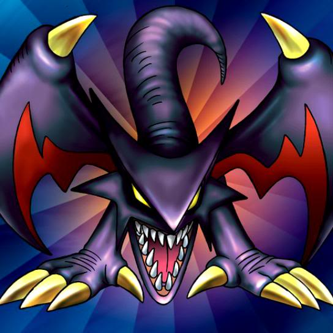

Koumori Dragon

STATS
ATK: 1500
DEF: 1200DECK COST
Deck Cost per Card: 27Fusion List (37 Possible Fusions)
- Koumori Dragon + Ancient Jar = Stone D.
- Koumori Dragon + Armaill = Sword Arm of Dragon
- Koumori Dragon + Armed Ninja = Sword Arm of Dragon
- Koumori Dragon + Armored Zombie = Dragon Zombie
- Koumori Dragon + Axe Raider = Sword Arm of Dragon
- Koumori Dragon + Bat = Metal Dragon
- Koumori Dragon + Bean Soldier = B. Dragon Jungle King
- Koumori Dragon + Beautiful Headhuntress = Sword Arm of Dragon
- Koumori Dragon + Bolt Penguin = Thunder Dragon
- Koumori Dragon + Brave Scizzar = Metal Dragon
- Koumori Dragon + Change Slime = Spike Seadra
- Koumori Dragon + Clown Zombie = Dragon Zombie
- Koumori Dragon + Darkworld Thorns = B. Dragon Jungle King
- Koumori Dragon + Dharma Cannon = Metal Dragon
- Koumori Dragon + Dragoness the Wicked Knight = Sword Arm of Dragon
- Koumori Dragon + Electric Snake = Thunder Dragon
- Koumori Dragon + Giant Soldier of Stone = Stone D.
- Koumori Dragon + Haniwa = Stone D.
- Koumori Dragon + Hyosube = Spike Seadra
- Koumori Dragon + Jellyfish = Spike Seadra
- Koumori Dragon + Kaminarikozou = Thunder Dragon
- Koumori Dragon + LaLa Li-oon = Thunder Dragon
- Koumori Dragon + M-Warrior #1 = Sword Arm of Dragon
- Koumori Dragon + Masked Clown = Sword Arm of Dragon
- Koumori Dragon + Mechanical Snail = Metal Dragon
- Koumori Dragon + Monsturtle = Spike Seadra
- Koumori Dragon + Oscillo Hero #2 = Thunder Dragon
- Koumori Dragon + Oscillo Hero = Sword Arm of Dragon
- Koumori Dragon + Pot the Trick = Stone D.
- Koumori Dragon + Rainbow Flower = B. Dragon Jungle King
- Koumori Dragon + Shadow Specter = Dragon Zombie
- Koumori Dragon + Swordsman from a Foreign Land = Sword Arm of Dragon
- Koumori Dragon + The Little Swordsman of Aile = Sword Arm of Dragon
- Koumori Dragon + Time Wizard = Thousand Dragon
- Koumori Dragon + Tyhone #2 = Red-Eyes B. Dragon
- Koumori Dragon + Zarigun = Spike Seadra
- Koumori Dragon + Zone Eater = Spike Seadra